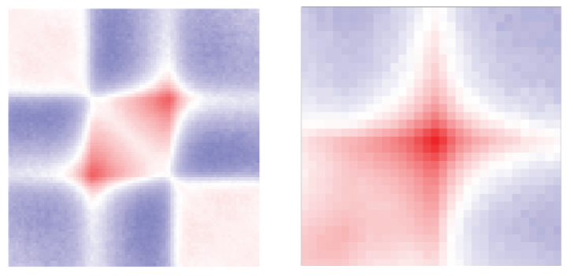
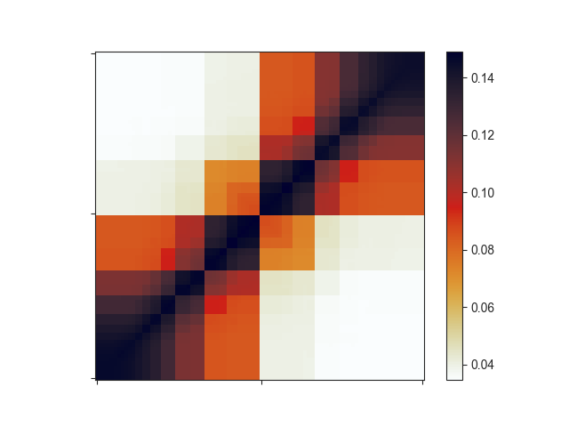

Hi-C aggregate analysis¶
Note
The following examples use the matrix files in FAN-C format. If you want to try the same
commands using Juicer .hic files, replace output/hic/binned/fanc_example_100kb.hic
with architecture/other-hic/fanc_example.juicer.hic@100kb. If you want to work with
Cooler files in this tutorial, use architecture/other-hic/fanc_example.mcool@100kb.
The results will be minimally different due to the “zooming” and balancing applied by
each package.
It can be very informative to view the average Hi-C matrix for a set of regions, rather than the Hi-C matrix at each individual region. This can help you in identifying common structural features of these regions or over-/under-representation of contacts in the vicinity.
Here are examples of TAD and loop aggregate plots from our recent preprint (Kruse et al. (2019)):
You can easily create your own aggregate plots using fanc aggregate.
usage: fanc aggregate [-h] [-m MATRIX_FILE] [-p PLOT_FILE] [--tads]
[--tads-imakaev] [--loops]
[--loop-strength LOOP_STRENGTH_FILE]
[--tad-strength TAD_STRENGTH_FILE] [-w WINDOW]
[--pixels PIXELS] [-v REGION_VIEWPOINT]
[-b BOUNDARY_MODE] [-i INTERPOLATION] [-r RELATIVE]
[-a ABSOLUTE] [-e] [-l] [--rescale]
[--colormap COLORMAP] [--vmin VMIN] [--vmax VMAX] [-tmp]
[-C] [--keep-submatrices] [-s] [--labels LABELS]
[--label-locations LABEL_LOCATIONS]
input [regions] [output]
Positional Arguments¶
- input
FAN-C matrix file (e.g. Hic)
- regions
File with regions (BED, GFF, Tabix, …) or region pairs (BEDPE)
- output
Output AggregateMatrix file for further processing.See -p and -m option for aggregate plot and matrix, respectively.
Named Arguments¶
- -m, --save-matrix
Path to save aggregate matrix (numpy txt format)
- -p, --save-plot
Path to save aggregate plot (PDF)
- --tads
Use presets for aggregate TADs: –relative 1.0 –expected –log –vmin -1 –vmax 1
- --tads-imakaev
Use presets for aggregate TADs: –relative 1.0 –expected–rescale
- --loops
Use presets for aggregate loops: –pixels 16 -l
- --loop-strength
Calculate loop strengths and save to file. Only works when providing BEDPE file, and Hi-C matrix.
- --tad-strength
Calculate tad strengths and save to file. Only works with –tads preset
- -w, --window
Width of the region window used for aggregation. If set, will only use the center position from the input regions and extract a submatrix of width -w around this region.
- --pixels
Width of the output image in pixels. Default: 90
- -v, --region-viewpoint
Viewpoint relative to region when using -w. By default, this measures the window from the region center. You can change this to other locations within each region using this parameter. Possible values:start, end, five_prime, three_prime, center
- -b, --boundary-mode
Points outside the boundaries of the input are filled according to the given mode. Options areconstant, edge, symmetrix, reflect, and warp.Default: reflect.
- -i, --interpolation
Type of interpolation to use for resizing. 0: Nearest-neighbor (default), 1: Bi-linear, 2: Bi-quadratic, 3: Bi-cubic, 4: Bi-quartic, 5: Bi-quintic
- -r, --relative
Relative extension of each region as fraction of region length (l). Final region in the image will be: <start of region - e*l> to <end of region + e*l>. Default: 1.0 (results in 3 times region size image). Additive with “-a” parameter!
- -a, --absolute
Extension (e) of each region in base pairs. Final region in the image will be: <start of TAD - e> to <end of TAD + e>. Default: 0 (no extension). Additive with “-r” parameter!
- -e, --expected-norm
Normalize matrix to expected values
- -l, --log
log2-transform normalized matrices. Only used in conjunction with “-e”.
- --rescale
Rescale normalized contact matrices using an a=-0.25 power law. Only used in conjunction with “-e”.
- --colormap
Matplotlib colormap to use for matrix
- --vmin
Minimum saturation value in image
- --vmax
Maximum saturation value in image
- -tmp, --work-in-tmp
Work in temporary directory
- -C, --no-cache
Do not cache chromosome matrices. Slower, but saves a lot of memory. Use this if you are having trouble with memory usage.
- --keep-submatrices
Save all the individual matrices that make up the aggregate matrix in the output object. Useful for debugging and downstream processing. Potentially uses a lot of memory and/or disk space.
- -s, --orient-by-strand
Flip submatrix if region is on the negative strand.
- --labels
Labels for the left, center, and right edge of the matrix (comma-separated).
- --label-locations
Relative location of ticks on bottom and left of aggregate plot (comma-separated). Ranges from 0 (left/bottom) to 1.0 (right/top). Default: 0,0.5,1.0
You can provide fanc aggregate with a list of genomic regions in any of the common
region-based formats (BED, GFF, BigWig, …) or with a list of genomic region pairs in
BEDPE format. For lists of regions, the aggregate matrix will be located at the Hi-C
matrix diagonal. For pairs of regions, matrix subsets can be anywhere in the genome.
Aggregate over variable size regions¶
By default, if you provide fanc aggregate with a list of regions, it will extract
the square Hi-C sub-matrices along the diagonal for each region and interpolate them
to match the width set by --pixels (90 by default). It will then calculate the
average value for each pixel, which then form the aggregate matrix.
Let’s try this on TADs called using the arrowhead algorithm (Rao and Huntley et al.,
2014). fanc aggregate will ignore
all regions in the file that are not present in the Hi-C matrix. In our example Hic file,
that is everything outside of chromosomes 18 and 19:
fanc aggregate output/hic/binned/fanc_example_100kb.hic \
architecture/domains/gm12878_tads.bed \
architecture/aggregate/fanc_example_100kb.agg
This command only produces an AggregateMatrix file (fanc_example_100kb.agg), which
is useful for further usage with FAN-C, but not easily readable. To extract the aggregate
matrix in txt format, simply add -m and to plot it just use -p:
fanc aggregate output/hic/binned/fanc_example_100kb.hic \
architecture/domains/gm12878_tads.bed \
architecture/aggregate/fanc_example_100kb.agg \
-p architecture/aggregate/fanc_example_100kb.agg.png \
-m architecture/aggregate/fanc_example_100kb.agg.txt
The resulting plot looks a bit strange:
Important note: if your input regions have variable sizes, as assumed in this section,
the resulting aggregate matrix with default settings is highly misleading, since smaller
regions will have larger average signal in the interpolated matrix due to being closer to
the diagonal. You can easily correct for this effect using O/E matrices instead of the
regular Hi-C matrix. Simply set the -e flag for this. -e works very well with
log2-transformed data (-l). Let’s see how this changes your matrix:
fanc aggregate output/hic/binned/fanc_example_100kb.hic \
architecture/domains/gm12878_tads.bed \
architecture/aggregate/fanc_example_100kb.agg \
-p architecture/aggregate/fanc_example_100kb_oe.agg.png \
-m architecture/aggregate/fanc_example_100kb_oe.agg.txt \
-e -l

This still does not look like much of a TAD, but we can add a little more context by
expanding the plotting region relative to the region size using -r:
fanc aggregate output/hic/binned/fanc_example_100kb.hic \
architecture/domains/gm12878_tads.bed \
architecture/aggregate/fanc_example_100kb.agg \
-p architecture/aggregate/fanc_example_100kb_oe_large.agg.png \
-m architecture/aggregate/fanc_example_100kb_oe_large.agg.txt \
-e -l -r 1.0

That plot depicts a region that is 3x the size of the TAD located in its center and already looks like we would expect: High signal in the center, especially at the TAD corner, where the corner loops are typically located.
We can further apply an exponential rescaling (--rescale) of the data to make this
look more like a Hi-C matrix:
fanc aggregate output/hic/binned/fanc_example_100kb.hic \
architecture/domains/gm12878_tads.bed \
architecture/aggregate/fanc_example_100kb.agg \
-p architecture/aggregate/fanc_example_100kb_oe_large_res.png \
-m architecture/aggregate/fanc_example_100kb_oe_large.agg.txt \
-e -r 1.0 --rescale --vmax 0.045
Here, we are not log-transforming the data and we are setting the saturation of the
pixel values at 0.045 using --vmax.
Aggregate TADs¶
For both the log2(O/E) and rescaled versions of the aggregate matrices, there are
preset flags you can use called --tads and --tads-imakaev, respectively. The
latter is named after the first author of the publication that first used rescaled
aggregate matrices in this fashion
(Flyamer, Gassler, and Imakaev et al., 2017). In
the above example, you can simply run
fanc aggregate output/hic/binned/fanc_example_100kb.hic \
architecture/domains/gm12878_tads.bed \
architecture/aggregate/fanc_example_100kb.agg \
-p architecture/aggregate/fanc_example_100kb_oe_large.agg.png \
-m architecture/aggregate/fanc_example_100kb_oe_large.agg.txt \
--tads
Fixed-width regions¶
Sometimes, you may want to use a fixed window surrounding a set of features in the
aggregate analysis, such as TAD boundaries. fanc aggregate provides the -w
option to plot the aggregate Hi-C matrix in a window os size w around the center
of each region in the list provided.
fanc aggregate output/hic/binned/fanc_example_100kb.hic \
architecture/domains/fanc_example_100kb.insulation_boundaries_score0.7_1mb.bed \
architecture/aggregate/fanc_example_100kb_boundaries.agg \
-w 5mb -p architecture/aggregate/fanc_example_100kb_boundaries.agg.png \
-m architecture/aggregate/fanc_example_100kb_boundaries.agg.txt \
--vmin 0 --vmax 0.03
You can see the relatively faint “average boundary” in the centre of the plot. When using O/E and log2-transformed matrices, this becomes much more obvious:
fanc aggregate output/hic/binned/fanc_example_100kb.hic \
architecture/domains/fanc_example_100kb.insulation_boundaries_score0.7_1mb.bed \
architecture/aggregate/fanc_example_100kb_boundaries_oe.agg \
-w 5mb -p architecture/aggregate/fanc_example_100kb_boundaries_oe.agg.png \
-m architecture/aggregate/fanc_example_100kb_boundaries_oe.agg.txt \
-e -l
You can change the viewpoint to other positions within a region, such as the 5’ end,
using the -v option.
Loops and other pairwise genomic regions¶
When you have loop calls or other pairwise genomic regions in BEDPE format, you can use
fanc aggregate to make aggregate loop plots. The preset for this is --loops.
fanc aggregate architecture/loops/rao2014.chr11_77400000_78600000.hic \
architecture/loops/rao2014.chr11_77400000_78600000.loops_no_singlets.bedpe \
architecture/loops/rao2014.chr11_77400000_78600000.loops_no_singlets.agg \
-p architecture/aggregate/rao2014.chr11_77400000_78600000.loops_no_singlets.agg.png \
--loops

Control the size of the plot using the --pixels argument.